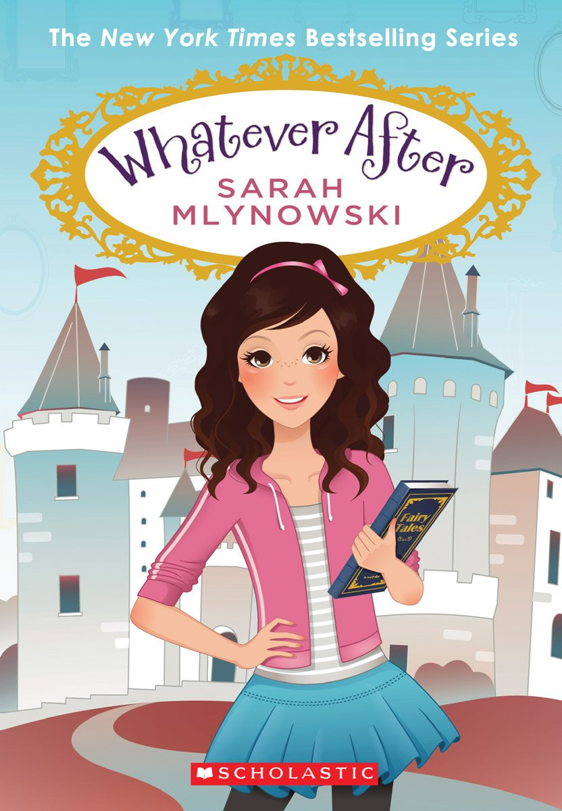

My Favorite Hobby
Reading books
I love reading. Mostly comic books like "The Babysitters Club", but I also like this chapter book series called" Whatever After". It's about a 10-year-old girl, (like me!) named Abby and her brother Jonah. They have a magic mirror in their basement which takes them into FAIRY TALES. I really love reading. It's like you're in another world until you put down your book.
